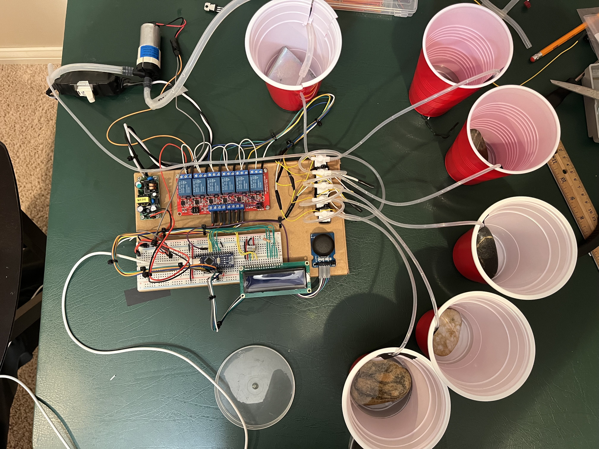
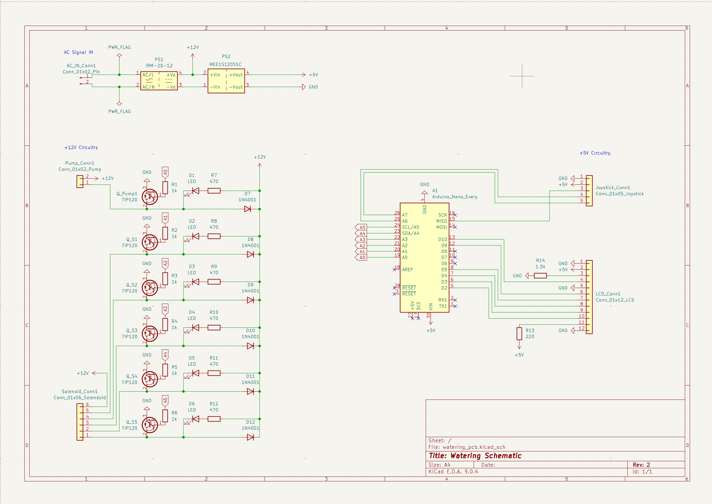
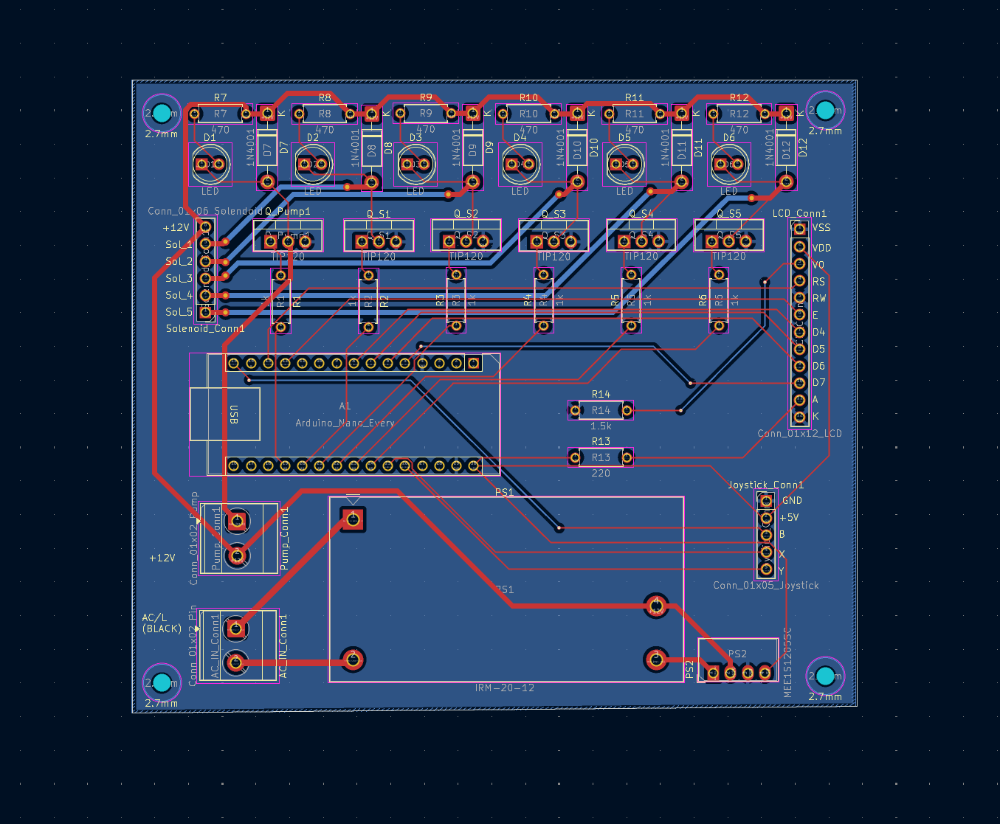
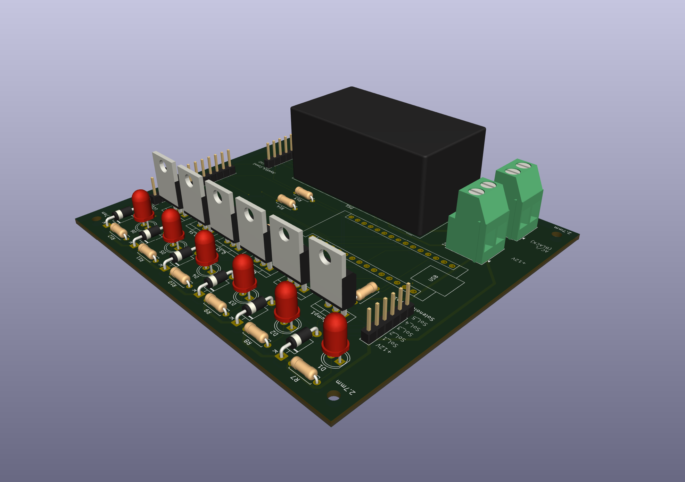
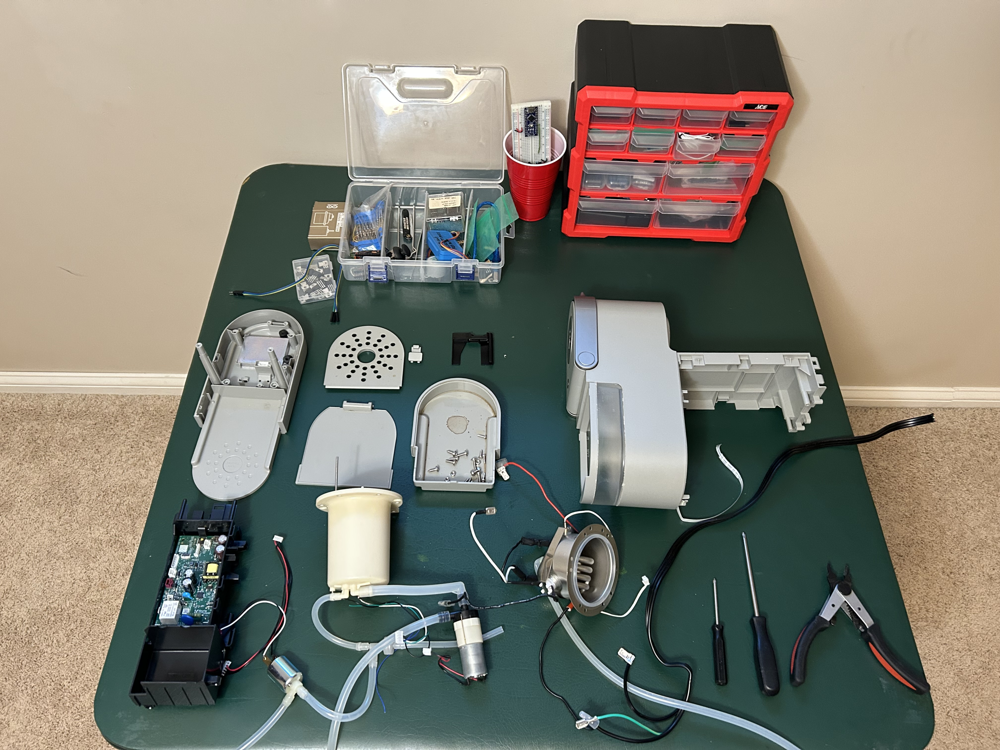
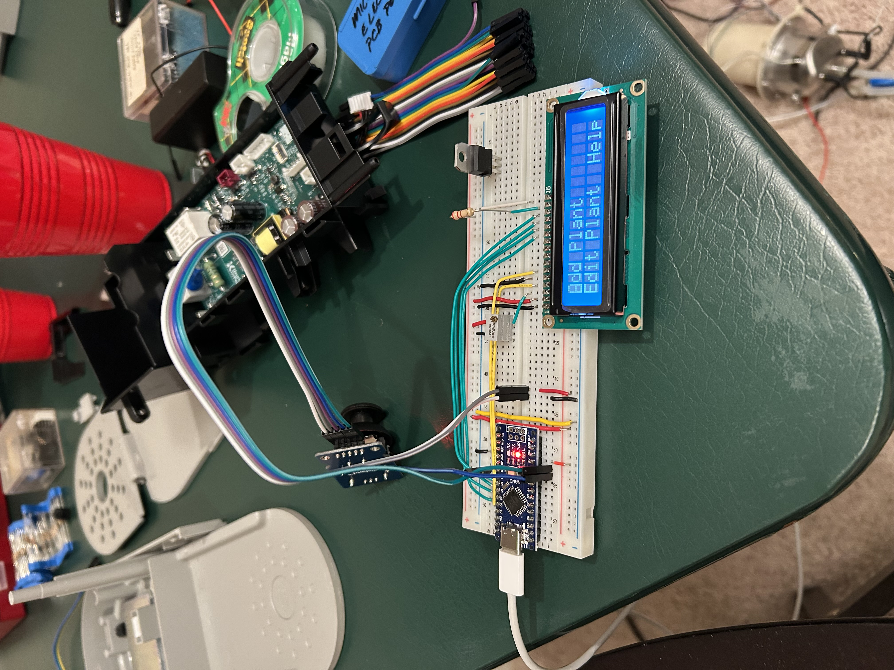
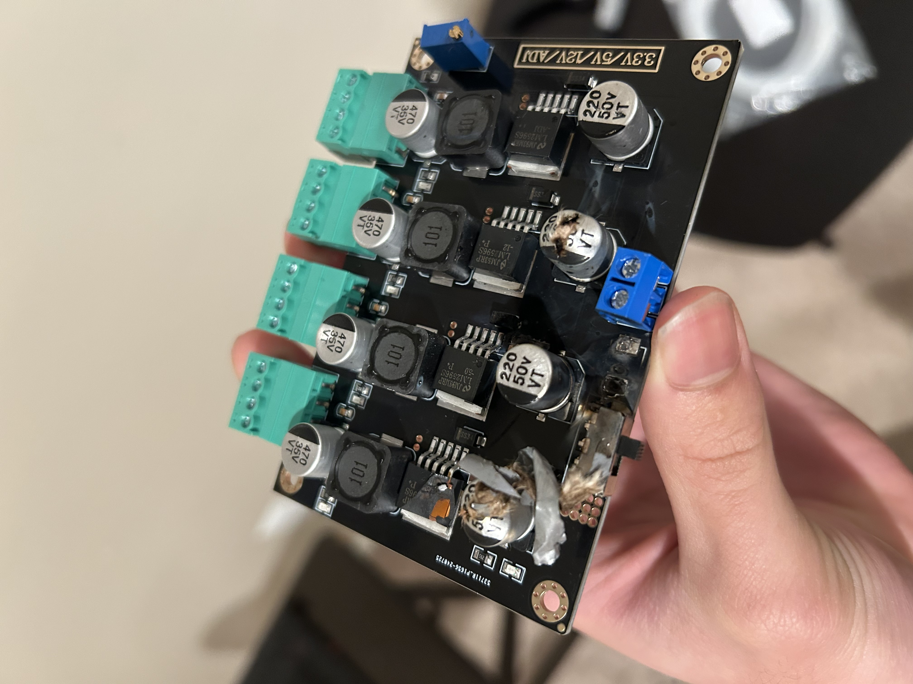
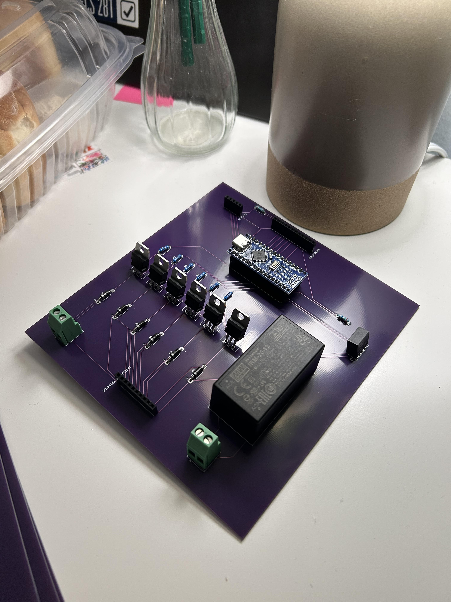

Automated Programmable Plant Watering System
This system allows five plants to be watered on a customizable timer with varying amounts of water dispensed at each cycle. I used a pump from a Keurig, some hobby solenoids, and an Arduino Nano to control the flow of water to each plant at the right time. The user can easily change and monitor all watering specifications for each plant attached using a joystick and an LCD display. To achieve the design in its current state I went from a breadboard, to a bad PCB, back to breadboard, to a better PCB. I learned so much while completing this project because I did so many things wrong. It was really fun to work on and I look forward to designing a container so I can give these out for my friends to try!
Check out all the KiCad files and Arduino code in THIS github repo!
System in Action

Schematic

PCB Editor

3D Viewer

Developmental Timeline
Getting an Idea
I was initially drawn to the packaging aspect of this project, wanting it to be both discrete and functional. To inform my design, I disassembled my sister's coffee maker, which provided me with useful tubes, a pump, and valuable insights that I could apply to the system.

Initial Testing & Setup
I verified the functionality of the pump I pulled from the coffee maker. I setup and tested some simple programs on the LCD display and verified its interaction with the joystick. Nothing yet required external power so everything was being powered by my Laptop.

Solving External Power Problem
I wanted the system to be wall-powered and run unobtrusively in the background. I initially tried a buck converter, but the solder pads were tiny and difficult to work with. Next, I bought a voltage converter board, but misreading the datasheet caused it to blow up the moment I plugged it in (safety glasses propoganda). Eventually, I settled on a through-hole AC-to-12V module for the pumps and solenoids, and a through-hole 12V-to-5V module to power the Arduino, joystick, and LCD.

Breadboard Thoroughly Before Ordering PCB :(
With the pumps working as anticipated and my winter break coming to a close, I decided to quickly design and order a PCB. This was not a good decision because there was a problem with the response of the LCD in the new rushed design. Overall, rushing caused me to make not only a disfunctional PCB, but one with lots of wasted space and poor component placement. It was purple though so that was a plus.

Successful System Level Test, Ordered New PCB
After successfully testing the entire system on a breadboard, I moved once again to designing a PCB. This time I made calculations for trace widths based on current draw, accounted for the LCD bug which caused my previous design to fail, condensed components in an organized fashion onto the board, and added red LEDs for debugging purposes. The system is fully functional, but it still needs proper housing. I look forward to designing a container to complete the project and put the finishing touch on a design I truly enjoyed working on.